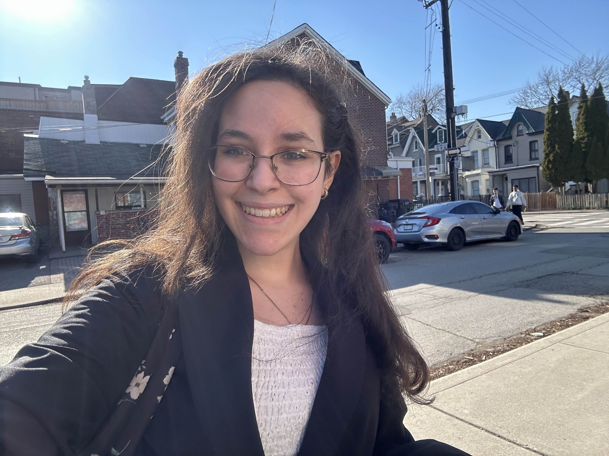

ABOUT
About me
I’m Lina Habib, a Mechanical Engineering + PEY Co-op student at the University of Toronto. I’m most interested in mechanical design, robotics development and building physical prototypes.

ABOUT
Design interests
I focus on mechanical design, robotics and prototyping, with an interest in translating functional requirements into practical, manufacturable designs.
My projects involve CAD assemblies, mechanical component selection, system integration and iterative design, from transmission mechanisms to wearable robotics and electronics.
Industry experience in construction coordination has strengthened my technical drawing, material planning and design communication skills.
TOOLBOX
What I work with.
Design & CAD
SolidWorks + Simulation
Autodesk Inventor
AutoCAD
GD&T
ArchiCAD
Computation & electronics
Python
MATLAB
LabVIEW
Circuit design
Raspberry Pi / GPIO
Making & analysis
Prototyping & 3D printing
Mechanical component research
Microsoft Office
Minitab
GitHub
MILESTONES
Awards & certificates.
Recognition and continued technical learning.
Awards & recognition
Highest academic average in Grades 11 and 12.
Recognized for academic excellence and an entrepreneurial mindset.